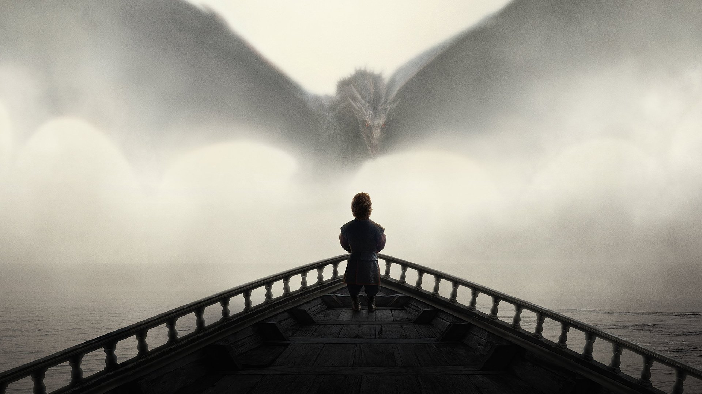
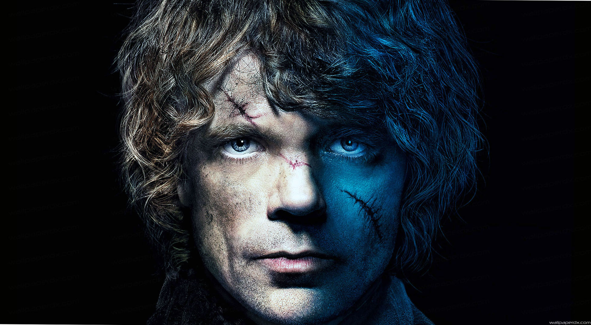

The Third Head of the Dragon
by Edward Corrigan
 **Spoilers and Speculation**
This fan page is based off the Game of Thrones prophecy of that the dragon has three heads. If not familiar with the prophecy, the video below provides supporting speculation.
Tryion with Valyrian Blood
As stated throughout the series by Georgie R.R. Martin, to be a dragon rider, you need to have Valyrian blood. So, for Tyrion to be the third head of the dragon, he needs to be a Targaryen. Let's look at the possibilities of this being true.
- The Son of the mad king:
This is the most widely believed theory allowing Tyrion to be a Targaryen. Supported by the books is the explanation that The Mad King Aerys was obsessed with the Tywin's wife Joanna and implemented the ancient ritual of having the first bedding rights after Joanna's marriage with Tywin. This brings into consideration the extended theory that Jaimie and Cersei Lannister could be the actual offspring, (or also the offspring alongside Tyrion), of the Mad King considering they were Joanna's first born children. However, an explanation that the Mad King is responsible for the conception of Tyrion is that Aerys continually took advantage of Joanna while she continued to live in King's Landing as a handmaiden alongside the wife of the Mad King, Rhaella Targaryen.
- Tyrion's Behavior with/and Dreams of Dragons
The books have described Tyrion's extended fascination and knowledge of dragons. They even go into discussions how Tryion sometimes has dragon dreams. In the show when Daenerys dragons are chained up and behaving very violently, even killing any servant coming close to them, Tyrion braves up the notion to unchain them in hopes to settle them. He somehow manages to calm the dragons and unchains them, while he monologues a past story of how he wished for a dragon on one of his birthdays in his youth, and how he cried himself to sleep after figuring out dragons were extinct. How he calms the dragons only supports the theory of him possessing Valyrian blood, hence the dragons cooperating with him. If Tyrion were to be a future dragon rider, he would most likely ride Viserion. The video from the link above provides logic on this, since Viserion is colored gold, which is the color of House Lannister. Also, he is the smallest dragon of the three. While Tyrion was talking about his past birthday wish of a dragon in his youth, he describes he even pleaded "It can be a small dragon, like me". It would only be fitting for Tyrion to be the rider of Viserion.
- Physical Descriptions of Tyrion
Tyrion's physical appearance in the show is very different than his appearance in the books. In the books, it states that Tyrion's looks do not match up with the bright green eyes and blonde hair of the Lannister's, but has two mismatched eyes and pale blonde hair. A mix between the silver hair traits of a Targaryen and blonde hair of a Lannister could explain the result of his pale blonde hair. The same goes with his one mismatched eye. The purple eye color Targaryen trait in the books mixing with the green eye trait of the Lannisters could very well explain his mismatched eyes, and who is to say his black eye is not a very dark purple or violet.
- Tywin's Bad Blood
It is well known that Tywin has never been fond of Tyrion, and resentment would better describe his feelings towards him. Supposedly the only time anyone ever saw Tywin smile was when he was alongside his wife Juanna. Therefore, it makes perfect sense to have distain towards someone who caused the death of the love of your life via childbirth. **Jon's mother and Daenerys' mother also died due to their births.** But imagine if it wasn't your true son whose birth caused the death of your wife. If Tyrion is the son of Aerys, every single time Tywin looks at Tyrion he is reminded not only of the death of his wife but also of the man who repeatedly raped his wife. This hate towards the Mad King also explains why Tywin was so reluctant to betray the Mad King and sac King's Landing. In the show, Tywin repeatedly refuses to give Tyrion the rights to their house's home of Casterly rock. Tywin even reasons with saying this because "[He] could not prove [Tyrion] is not [His] son". Later when Tyrion shoots the man with a crossbow, his dying words are "You are no son of mine". This provides even more reason to believe that Tyrion is the son of Aerys.
Whether or not the three heads combined (Deanerys, Jon, and Tyrion) will make up Azor Ahai, the prince that was promised, is another theory that is still up for debate. However, take this quote from Ameion Targaryen in the book A Feast for Crows into consideration. "No one ever looked for a girl," he said. "It was a prince that was promised, not a princess. Rhaegar, I thought... What fools we were, who thought ourselves so wise! The error crept in from the translation. Dragons are neither male nor female, Barth saw the truth of that, but now one and now the other, as changeable as flame. The language misled us all for a thousand years. Daenerys is the one, born amidst salt and smoke. The dragons prove it." This theory allows Daenerys to be the Prince that was Promised, as well as a allowing the theory for Jon Targaryen and Daenerys combined to make up the Prince that was Promised. However, personally I couldn't believe that Daenerys and Jon are combined solely to complete the prophecy without including a third head. This is where the theory that Tyrion is needed to complete the third head to make Azor Ahai just might be plausible.
| Name | Mother | Father |
|---|---|---|
| Jon Targaryen | Lyanna Stark | Rheagar Targaryen |
| Daenerys Targaryen | Rhaella Targaryen | Aerys Targaryen |
| Tyrion Targaryen | Joanna Lannister | Aerys Targaryen |